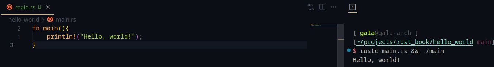
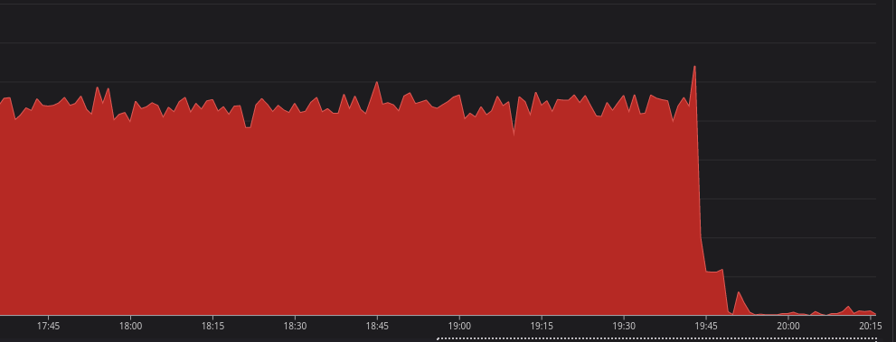

Hi there, Thank you for reading my learning log for the first quarter
of 2023. I am going to share what I have learned in the last three
months. I hope you will find it useful.
TL;DR
I learned Rust, Data Science, maintaining bfportal.gg and
contributing to django, is-a-dev and community tools.
Full log
January

At the start of the year, I decided that I will be learning Rust.
For, the next month I was learning the basics of Rust. The borrow
checker in rust was a new concept for me. The last static language
that I used was C++ and I was not familiar with the concept of
ownership. I was able to learn the basics of Rust in a month. I was
able to build a simple CLI application in Rust. Currently, I am in
the last chapter of the book about building a web server in Rust.
February
Then as January came to a close, I was very interested in ChatGPT.
The more I looked into it, the more I got interested in data science
and machine learning. I spent most of my time completing the course
"Deep Learning A-Z™ 2023: Neural Networks"
on udemy. I learned concepts like ANN, CNN, and Boltzmann Machine.
During this time I also played with
Wagtail API for bfportal.gg. I wanted to expose the creator of an experience in the API. But
as the creator is a nested user field it can't be in the API as a
field of its own. So I made use of
`@property`
so that a function can resolve the nested property into a single
value. Then google shared accepted GSOC orgs with us. I am excited
as both Wagtail and Django got selected.
March

Then came march and I wanted to get selected as a GSOC contributor this year. I started contributing to Django and got my first PR in the project approved and merged 😁 . During this month bfportal had two major events.
Its userbase crossed 2k users
Migrating the project to use Python 3.11.
I was also using `runserver` in production but now the project uses `gunicorn`. That gave the project a very very good performance boost (I've attached the usage graph). Currently, I'm preparing for my Maths exam (is on the 28th of march) and drafting my proposal for GSOC.
Then came march and I wanted to get selected as a GSOC contributor this year. I started contributing to Django and got my first PR in the project approved and merged 😁 . During this month bfportal had two major events.
Its userbase crossed 2k users
Migrating the project to use Python 3.11.
I was also using `runserver` in production but now the project uses `gunicorn`. That gave the project a very very good performance boost (I've attached the usage graph). Currently, I'm preparing for my Maths exam (is on the 28th of march) and drafting my proposal for GSOC.